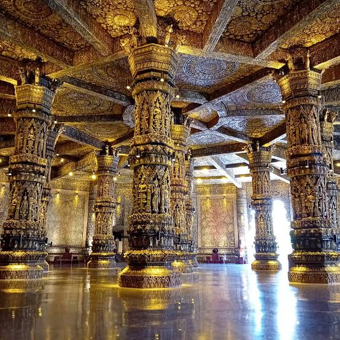

世界文化遗产 · 澜沧匠艺
老挝艺术博物馆
LAO ART MUSEUM · 金殿佛艺与沉香木雕数字典藏
◆
‹

›
金顶藻井
· 馆藏陈列
01 / 12
点击主图可全屏细看
◆ 数字典藏
藏品 01
金顶藻井
馆藏 LA-001 · 金箔、朱漆、玻璃镜片镶嵌 · 佛殿天花
✦ AI 色彩还原
⤢ 全屏细看
🔊 语音导览（中文）
🔊 Voice Guide (English)
讲解词 · 中文
藏品陈列
共十二件 · 点击切换展柜主图
×
金顶藻井
点击任意处或按 ESC 关闭 · ← → 切换藏品